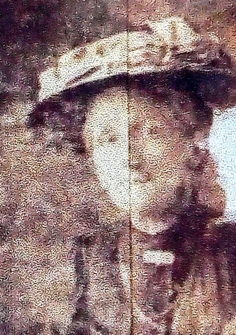
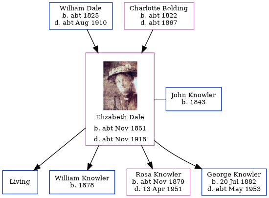

Elizabeth Ann Knowler (née Dale) cNov 1851 - c1918
[ Home ] | [ Calendar ] | [ Surnames Index ] | [ Errors ] | [ Family History ]The child of William Dale (an agricultural labourer) and Charlotte Bolding, Elizabeth Dale, the first cousin four-times-removed on the father's side of Nigel Horne, was born in Chartham, Kent, England c. Nov 18511,2,3, was baptised there at St Mary on 1 Feb 1852 and also married John Knowler (a general labourer with whom she had 4 children: Arthur John, William Edward, Rosa Ellen and George, along with 1 surviving child) there at St Mary on 14 Oct 18735.
During her life, she was living at Heath Farm Cottages, Canterbury, Kent, England on 7 Apr 18611; at Parish Road in Chartham on 2 Apr 18712; in Bilting, Kent, England on 3 Apr 18816 and on 5 Apr 18917; at The Lees, Chilham, Kent on 31 Mar 19018 (when she was living with her); and at Round Oast Cottage, Ospringe, Kent on 2 Apr 19119.
She died c. Nov 1918 in Faversham, Kent, England4.
Parents
- William was born c. 1825
- Charlotte was born c. 1822
Children
- William Edward was born in 1878
- Rosa Ellen was born c. Nov 1879
- George was born on 20 Jul 1882
Citations
- 1861 England, Wales & Scotland Census - Findmypast (was age 9 and the daughter of the head of the household)
- 1871 England, Wales & Scotland Census - Findmypast (was age 19 and the daughter of the head of the household)
- England & Wales births 1837-2006 - Findmypast
- England & Wales deaths 1837-2007 - Findmypast
- England & Wales Marriages 1837-2005 - Findmypast
- 1881 England, Wales & Scotland Census - Findmypast (was age 28 and the wife of the head of the household)
- 1891 England, Wales & Scotland Census - Findmypast (was age 39 and the wife of the head of the household)
- 1901 England, Wales & Scotland Census - Findmypast (was age 49 and the wife of the head of the household)
- 1911 Census for England & Wales - Findmypast (was age 59 and the wife of the head of the household)
Media
Elizabeth Ann Dale

1881 England, Wales & Scotland Census - GBC/1881/0004705504
England & Wales births 1837-2006 - BMD/B/1851/4/AG/000846/017
England Births & Baptisms 1538-1975 - R_885421953
Kent Baptisms - GBPRS/CANT/B/96193040
1861 England, Wales & Scotland Census - GBC/1861/0003428298
1871 England, Wales & Scotland Census - GBC/1871/0014163787
1891 England, Wales & Scotland Census - GBC/1891/0005718391
1901 England, Wales & Scotland Census - GBC/1901/0005458727
1911 Census for England & Wales - GBC/1911/RG14/04400/0039/2
England & Wales deaths 1837-2007 - BMD/D/1918/4/AZ/000961/086
Family Tree
Map
Generated by ged2site. Last updated on Jul 3, 2024